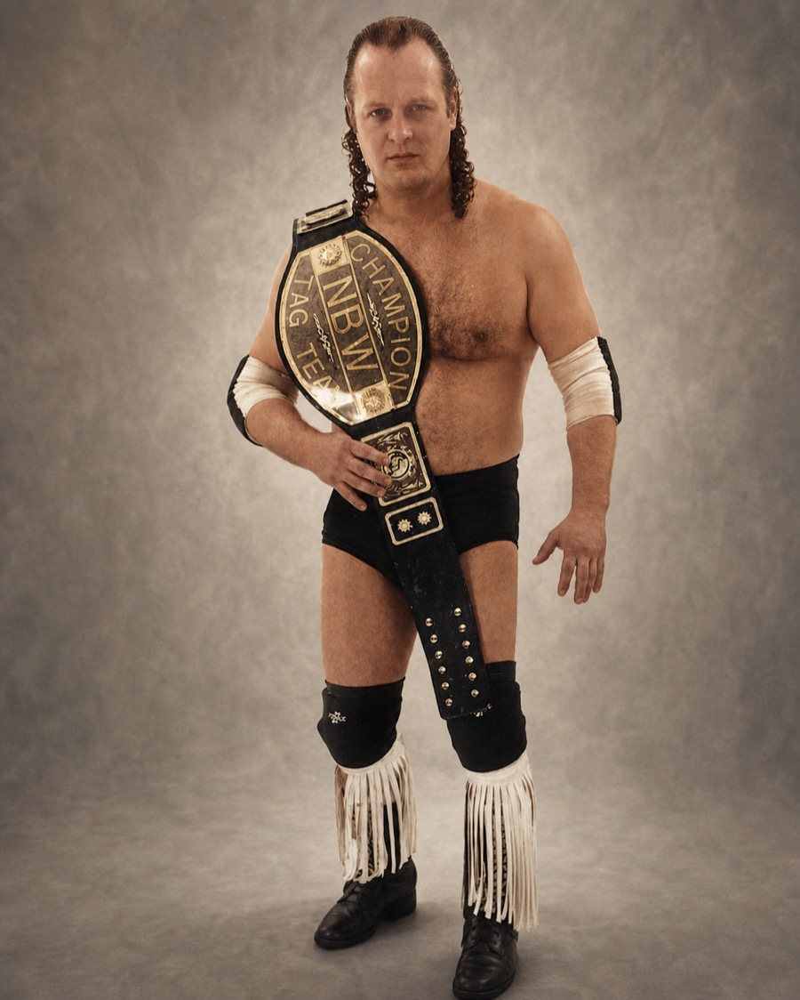
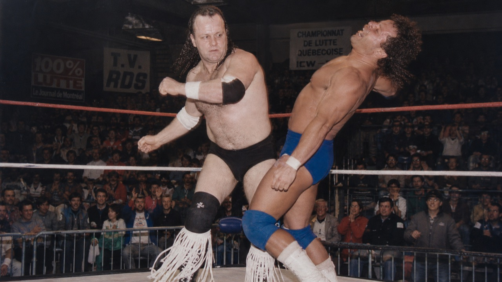

Numérisations de combats
Capsules vidéo, extraits de galas et bandes maison à convertir pour préserver la mémoire visuelle de la lutte professionnelle à Hull et à Gatineau.
Patrimoine sportif de l'Outaouais
Découvrez l'histoire, les archives, les moments marquants et l'héritage d'un vétéran marquant de la lutte professionnelle au Québec, admiré à Hull, à Gatineau et dans toute la région.

Événement à venir
Le prochain gala majeur à surveiller sur la scène de la lutte en Outaouais est Guerre Civile VI, présenté au Centre Slush Puppie à Gatineau le samedi 30 mai 2026 à 18 h 30.
Pour les billets, les invités et les informations les plus récentes, consultez le site officiel de la GPW. Cette section peut être mise à jour rapidement si l'affiche, l'horaire ou les détails changent.
Information vérifiée le 3 mai 2026 à partir du site officiel GPW et de la page événements du Centre Slush Puppie.
Biographie
Guy Sauriol demeure associé à plusieurs époques de la lutte professionnelle au Québec: des circuits montréalais des années 1970 jusqu'aux galas CPW, CPW International et GPW qui ont nourri la mémoire de Hull, Gatineau et de l'Outaouais.
Guy “The Legend” Sauriol est un lutteur vétéran québécois dont le parcours s'étend de 1971 à 2006, avec des retours et hommages remarqués dans les années 2000 et 2020. Les archives le rattachent d'abord aux As de la lutte et au circuit de Johnny Rougeau à Montréal, notamment autour du Centre Paul-Sauvé, avant de le suivre vers Drummondville, la NBW, puis la scène de Hull et Gatineau.
Dans les années 1980 et 1990, il devient une figure forte de la lutte professionnelle en Outaouais. Son nom est lié à la CPW, à CPW International et aux galas du Centre Robert-Guertin de Hull, où son style old school, explosif et fougueux lui permet de s'imposer comme un favori de la foule et une présence magnétique sur le ring.
Son histoire comprend aussi des repères marquants: une association avec Dave le Justicier, des affrontements liés à Abdullah the Butcher, une rivalité soutenue avec Wild Dangerous Dan et des combats de retour jusqu'en 2006. Aujourd'hui encore, ses apparitions dans les galas hommage et événements de légendes rappellent son rôle de pionnier régional, de modèle pour la relève et de gardien vivant d'une culture de lutte bâtie sur l'honneur, l'engagement et la passion.
Parcours
Les jalons ci-dessous servent de base éditoriale pour raconter la carrière de Guy Sauriol avec un ton documentaire. Ils peuvent être ajustés au fil de nouvelles confirmations d'archives.
Années 1980–1990
C'est la période la plus fortement associée à Guy Sauriol, alors qu'il bâtit sa réputation de vétéran intense et de favori du public sur la scène régionale québécoise.
Années 1980–1990
Les archives rassemblées soulignent son partenariat avec Dave le Justicier, une association qui alimente encore aujourd'hui les récits de la lutte professionnelle à Gatineau et à Hull.
Repère d'archives
Son nom est aussi associé à des affrontements relevés, dont des liens avec Abdullah the Butcher, ce qui renforce son statut de figure crédible et redoutée dans l'imaginaire local.
4 février 2006
Une tête d'affiche qui marque un retour remarqué et témoigne de l'attachement du public envers Guy Sauriol même bien après ses années de gloire principales.
13 mai 2006
Un combat en cage contre Wild Dangerous Dan qui demeure l'un des grands repères de la mémoire récente pour les amateurs de lutte professionnelle en Outaouais.
17 juin 2023
Le gala majeur de la Gatineau Pro Wrestling met en valeur l'histoire de la lutte à l'aréna Robert-Guertin et rend hommage à Guy Sauriol, confirmant sa place dans la mémoire vivante de l'Outaouais.
4 octobre 2025
Sa présence dans une grande affiche commémorative et communautaire montre que Guy Sauriol demeure l'un des visages rassembleurs de la lutte professionnelle régionale.
2026
Entre galas hommage, rendez-vous de vétérans et initiatives d'archives, sa place dans la mémoire collective continue de se renforcer bien au-delà de ses années actives.
Archives
Cette section a été pensée pour grandir facilement. Chaque carte peut devenir une entrée d'archive détaillée ou pointer vers une nouvelle page si le projet évolue.
Capsules vidéo, extraits de galas et bandes maison à convertir pour préserver la mémoire visuelle de la lutte professionnelle à Hull et à Gatineau.
Affiches imprimées, publicités de journaux et visuels de gala qui racontent le ton, les rivalités et l'ambiance des grandes soirées de lutte en Outaouais.
Photos de combat, images promotionnelles, portraits avec ceintures et clichés de coulisses pour documenter la trajectoire de Guy Sauriol sous plusieurs angles.
Anecdotes, souvenirs de gala, programmes annotés, coupures de presse et récits personnels capables de donner du relief à l'histoire régionale.

Mémoire visuelle
Cette image de combat donne le ton du site: une présentation respectueuse, forte et ancrée dans l'émotion documentaire. Le but n'est pas d'en faire trop, mais de laisser parler l'intensité du personnage et l'énergie des galas d'époque.
Partager une archive ou un souvenirHéritage
Par son aura, ses combats et sa longévité symbolique, Guy Sauriol s'inscrit dans la continuité de la lutte professionnelle au Québec et dans la transmission de sa mémoire en Outaouais.
Le site agit comme un espace de sauvegarde pour les images, les bandes VHS et les documents qui racontent l'histoire de la lutte professionnelle à Gatineau, à Hull et dans les villes voisines.
Son parcours évoque un modèle de ténacité et d'engagement pour les nouvelles générations de lutteurs, d'écoles locales et de promotions régionales.
À travers Guy Sauriol, c'est toute une culture d'aréna, de rivalités, de programmes imprimés et de passion populaire qui peut être racontée avec plus de précision.
Galerie
Les vignettes chargent paresseusement et s'ouvrent dans une visionneuse légère. Les fichiers peuvent être remplacés plus tard sans modifier la structure du site.
Contribution
Fans, promoteurs, amis, photographes et historiens locaux peuvent aider à enrichir ce fonds d'archives. L'objectif est de préserver une partie importante de la lutte professionnelle en Outaouais, avec tact et rigueur.
Conseil éditorial: gardez une copie locale des originaux et ajoutez un nom de fichier descriptif pour chaque nouvel élément d'archive.
{kind=link}
{kind=link}
{kind=link}
{kind=link}